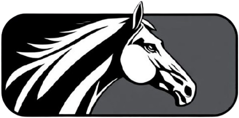

PRÉSENTATION
Nous somme la veille de la compétition d'un concours international et la monture de Simon Delestre a été enlevée. En panique, celui-ci contact la meilleure détective qu'il connaisse pour retrouver sa monture avant que ne soit donné le départ du CSO, le lendemain.
Ayant a coeur de soutenir votre cavalier favori, vous ne perdez pas une seconde et sautez dans Paulette : direction les grandes écuries du Château de Chantilly.
Cliquez sur le bouton ci-dessous pour vous rendre au château de Chantilly et commencer votre enquête.

JOUABILITÉ
Au cours de cette enquête tu sera amenée à te déplacer dans différents lieux. Pour cela, clique sur les différents boutons "LIEUX" en bas de ton écran.
Il se peut que la solution à certaines énigmes ne te saute pas au yeux. Si tu es bloquée, clique sur le bouton "INDICES" en haut à gauche de ton écran. Tu seras rediriger vers la page des solutions. Entre le numéro de l'énigme sur laquelle tu bloques et des indices te seront donnés
AVERTISSEMENT
Ce jeu a été pensé pour toi et est reservé explisivement à un usage personnel. Merci d'y jouer seule et de ne pas partager le lien sans le consentement du créateur de ce jeu.